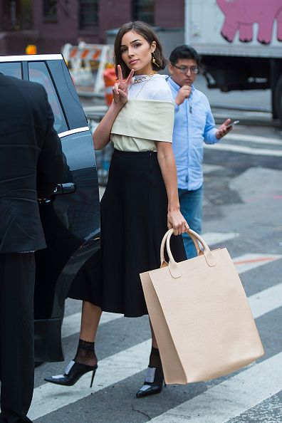
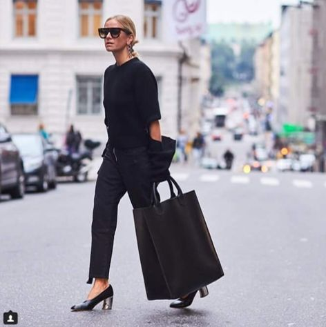

HVRMNNSN – merkevareutvikling fra idé til marked
HVRMNNSN er SALOs eget merkevareprosjekt – utviklet fra idé, posisjonering og produktkonsept til design, produksjon, innhold og internasjonal lansering.


Ambisjonen var å utvikle et norsk premiummerke med en tydelig identitet forankret i nordisk natur og minimalisme. Produkt, materialer, produksjon, design og kommunikasjon skulle støtte den samme merkevareideen.
SALO utviklet HVRMNNSN som merkevare og lanserte det første produktet i 2016: en oversized tote bag håndsydd i Sverige i sporbar, vegetabilsk garvet skinnkvalitet.
Vi har arbeidet med hele merkevareløpet – fra navn, posisjonering og fortelling til produktutvikling, visuell retning, design, produksjonskoordinering, tekst, foto og digitale flater. Lanseringen ble gjennomført med pressemelding og medieinnsalg overfor tradisjonelle medier i Skandinavia og internasjonalt, og ikke minst: med kontakt opp mot både nasjonale og internasjonale påvirkere og motepersonligheter.
Kjernen i merkevaren er tidløs design, lang levetid, autentisitet og en transparent opprinnelse. Det er ikke lagt på som kommunikasjon i etterkant, men bygget inn i selve produktet og produksjonen.
Lanseringen skapte omtale og henvendelser fra internasjonale medier. HVRMNNSN ble et langsiktig laboratorium for merkevarebygging – der strategi, design, produkt, PR og innhold utvikles i én helhet.
Se tjenesten ↗
02 — SynlighetSe tjenesten ↗
03 — ProduksjonSe tjenesten ↗
Servering, forbruker
Case 08Kultur, egeneid
Case 01Merkevare, sport
Trenger du et erfarent blikk på en kommunikasjonsutfordring, eller noen som kan få arbeidet ferdig?
Ta kontakt med oss, så finner vi tid for et effektivt arbeidsmøte.
post@salokommunikasjon.no